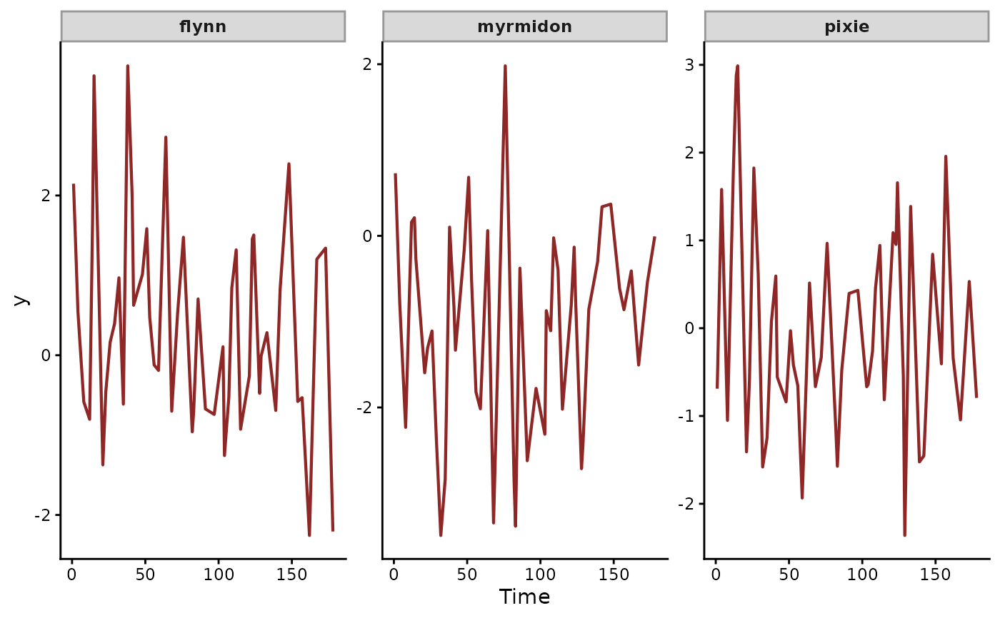

Simulated coral bleaching index with irregular CAR(1) state
Source:R/coral_surveys.R
coral_surveys.RdA state-space dataset for three coral reefs surveyed at
irregular monthly intervals (gap distribution
Uniform(1, 6) months, mean approximately 3.5). The latent
state is a continuous-time AR(1) (CAR(1)) trend per reef with
phi = 0.7 and sigma = 0.5. The observation equation adds
an observed sea-surface temperature (SST) driver via a smooth
nonlinear effect.
Format
A data.frame with 150 rows and the following fields:
- series
factor identifying the reef (
flynn,myrmidon,pixie); duplicated asreef.- time
integer month index (irregularly spaced within each reef).
- y
numeric bleaching index (Gaussian, scaled); duplicated as
bleaching.- reef
factor, alias of
series.- sst
numeric observed sea-surface temperature in degrees Celsius.
- bleaching
numeric bleaching index, alias of
y.
Details
Naive AR(1) treats every consecutive observation as a unit gap
and biases phi downward toward phi^mean(dt) (roughly 0.29
for this dataset), leaving the SST smooth to absorb persistence
that belongs to the latent state. trend_formula = ~ CAR()
with the supplied time column measures the damping over the
median gap between surveys, three months here. Its ar1_trend
is then near 0.7^3 = 0.34, the monthly phi of 0.7 cubed.
With persistence assigned to the latent state, the SST smooth is
identifiable.
True generative components:
Per-reef intercepts (centred).
Latent CAR(1) state per reef with
phi = 0.7andsigma = 0.5, propagated throughtrend[t] = phi^dt * trend[t-1] + N(0, sigma * sqrt((1 - phi^(2*dt)) / (1 - phi^2))).Shared smooth nonlinear obs-side effect of SST, evaluated via a thin-plate basis.
Observation noise
sigma_obs = 0.3.
See also
CAR() for the trend, AR() for evenly spaced surveys,
mvgam_data() to check the data.
Examples
data(coral_surveys)
mvgam_data(coral_surveys, family = gaussian())
#> ✔ Data check passed for family 'gaussian (link = identity)'.
#> • series: 3 levels
#> • time: 1 to 178
#> • n obs: 150 (0 NA)

# \dontrun{
# A model with the structure the data were simulated from
mod <- mvgam(
formula = y ~ s(sst, k = 8),
trend_formula = ~ CAR(),
data = coral_surveys,
family = gaussian(),
chains = 2, silent = 2
)
#> Warning: 69 of 2000 (3.0%) transitions ended with a divergence.
#> See https://mc-stan.org/misc/warnings for details.
#> Warning: 2 of 2 chains had an E-BFMI less than 0.3.
#> See https://mc-stan.org/misc/warnings for details.
summary(mod)
#> Family: gaussian
#> Links: mu = identity; sigma = log
#> Formula: y ~ s(sst, k = 8)
#> Data: coral_surveys (Number of observations: 150)
#> Series: 3
#> Trends: CAR
#> Draws: 2 chains, each with iter = 2000; warmup = 1000; thin = 1;
#> total post-warmup draws = 2000
#>
#> == Observation Model ==
#> Smoothing Spline Hyperparameters:
#> Estimate Est.Error l-95% CI u-95% CI Rhat Bulk_ESS Tail_ESS
#> sds(ssst_1) 1.69 0.92 0.40 4.05 1.01 343 542
#>
#> Regression Coefficients:
#> Estimate Est.Error l-95% CI u-95% CI Rhat Bulk_ESS Tail_ESS
#> Intercept 0.03 0.14 -0.23 0.30 1.01 391 479
#> ssst_1 10.20 2.93 5.67 16.67 1.01 391 819
#>
#> Further Distributional Parameters:
#> Estimate Est.Error l-95% CI u-95% CI Rhat Bulk_ESS Tail_ESS
#> sigma 0.48 0.11 0.24 0.68 1.02 54 54
#>
#> == Trend Model ==
#> Trend Specific Parameters:
#> Estimate Est.Error l-95% CI u-95% CI Rhat Bulk_ESS
#> sigma_trend[flynn] 0.61 0.17 0.23 0.90 1.01 119
#> sigma_trend[myrmidon] 0.59 0.15 0.30 0.89 1.01 97
#> sigma_trend[pixie] 0.33 0.13 0.10 0.58 1.03 74
#> ar1_trend[flynn] 0.29 0.20 0.02 0.77 1.00 471
#> ar1_trend[myrmidon] 0.82 0.10 0.58 0.97 1.01 238
#> ar1_trend[pixie] 0.59 0.22 0.13 0.95 1.00 327
#> Tail_ESS
#> sigma_trend[flynn] 213
#> sigma_trend[myrmidon] 452
#> sigma_trend[pixie] 166
#> ar1_trend[flynn] 317
#> ar1_trend[myrmidon] 468
#> ar1_trend[pixie] 571
#>
#> Draws were sampled using sampling(NUTS). For each parameter, Bulk_ESS
#> and Tail_ESS are effective sample size measures, and Rhat is the potential
#> scale reduction factor on split chains (at convergence, Rhat = 1).
#>
#> Next steps:
#> - `pp_check(fit)`: posterior predictive checks
#> - `forecast(fit, newdata = ...)`: out-of-sample forecasts
#> - `lfo_cv(fit)`: leave-future-out model comparison
#> - `conditional_effects(fit)`: covariate effects
#> Use `how_to_cite(fit)` for a methods paragraph and `methods_md(fit)` for its equations.
# }